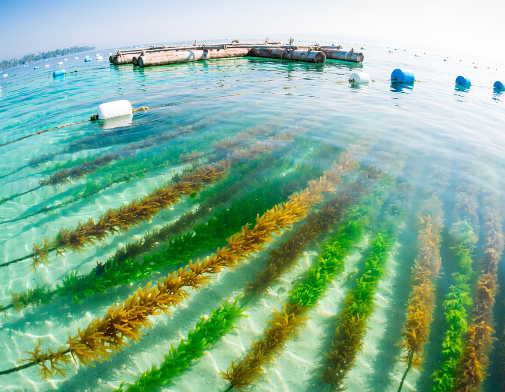
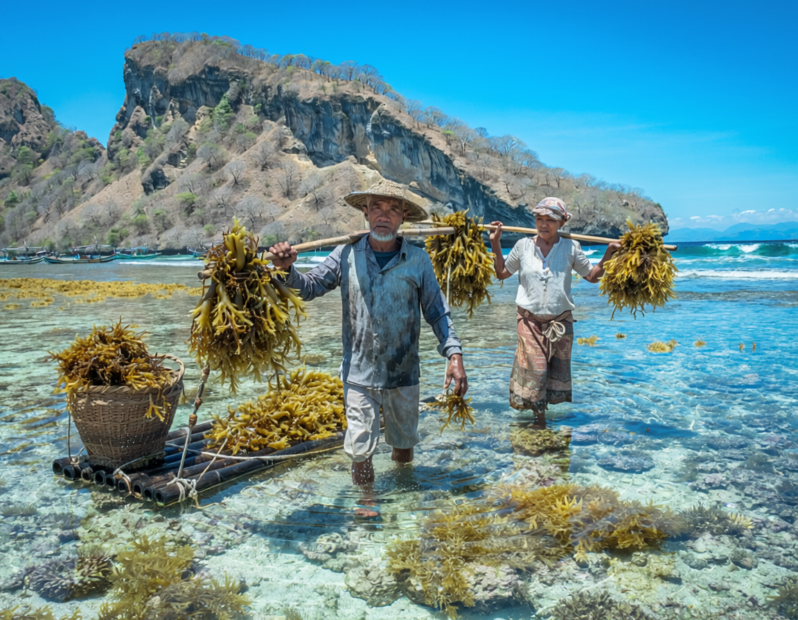
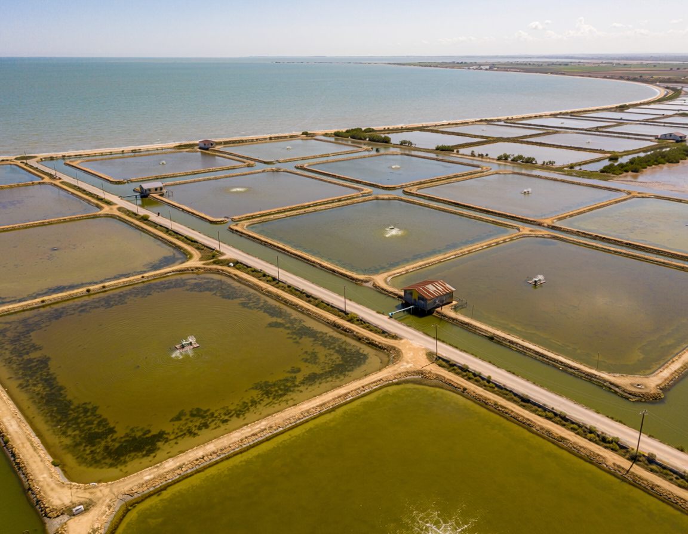
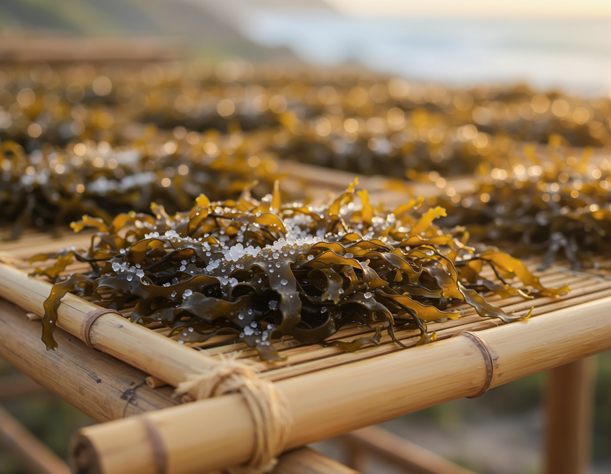
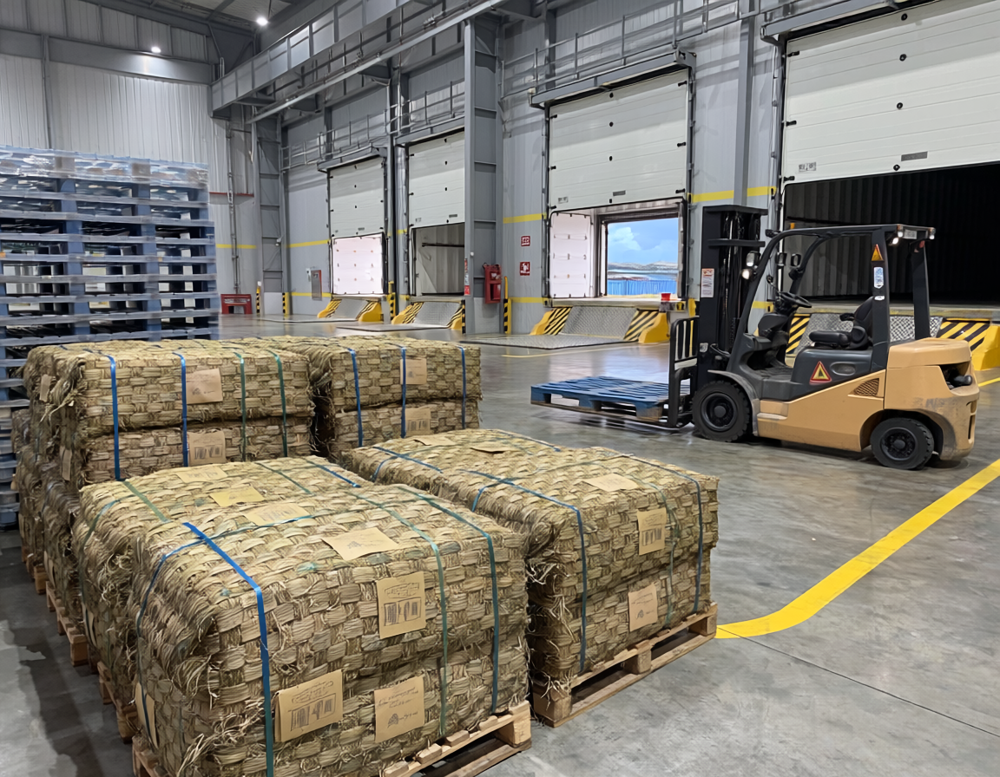
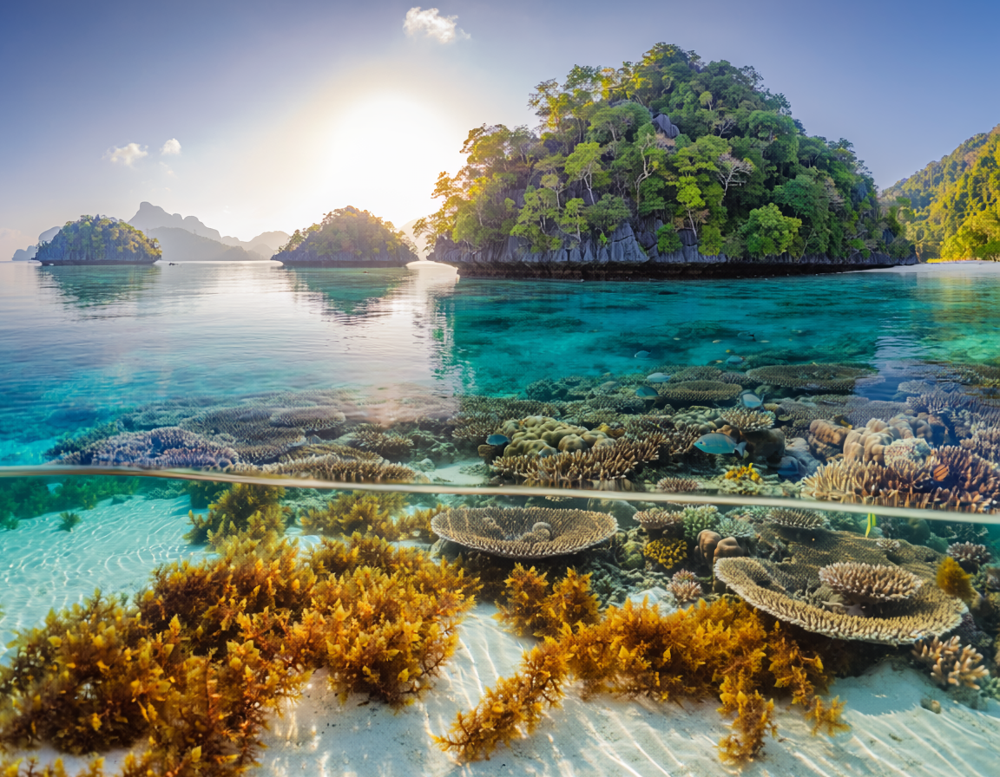

The Golden Standard: Sourcing Premium Cottonii
Discover how crystal-clear shallow waters yield high-gel-strength Kappaphycus alvarezii.
Read Article →Explore our deep dives into Indonesia's coastal farming regions, species processing, and global export standards.

Discover how crystal-clear shallow waters yield high-gel-strength Kappaphycus alvarezii.
Read Article →
An inside look at how high-salinity tidal currents create robust Eucheuma spinosum.
Read Article →
Exploring how brackishwater pond systems provide a stable supply of agarophyte material.
Read Article →
How coastal farming communities utilize equatorial sunshine to lock in purity.
Read Article →
An operational breakdown of collection networks and strict moisture testing protocols.
Read Article →
A look at sustainable harvesting initiatives across pristine marine ecosystems.
Read Article →